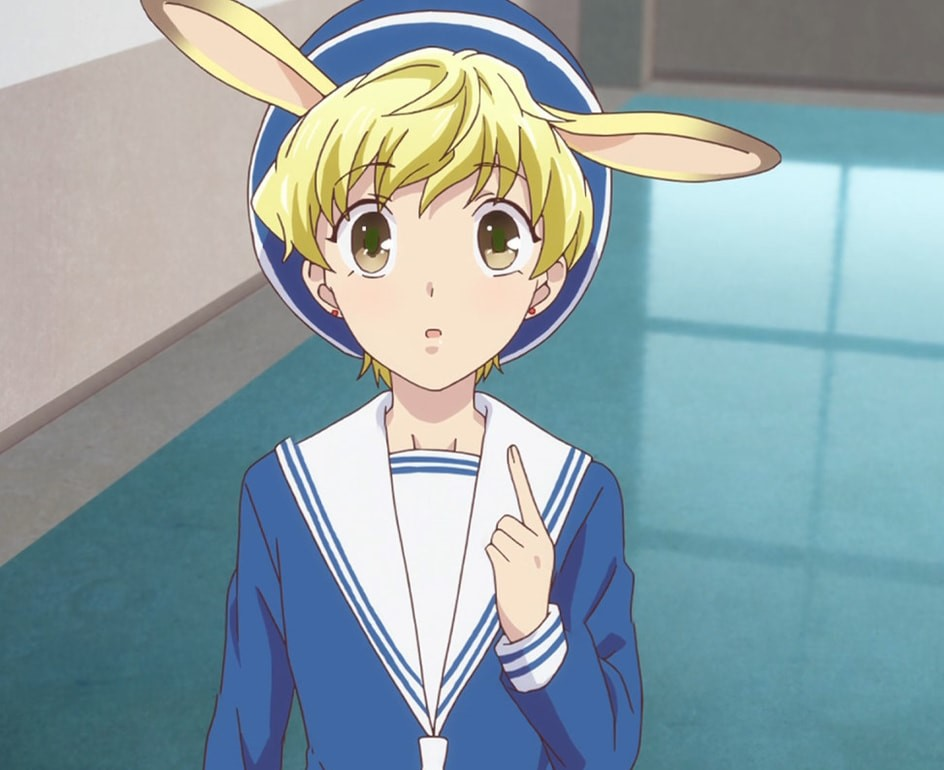

|
Age: 15-17 Hair color: Blonde Eye color: He is the Rabbit of the chinese zodiac. He is often mistaken as an elementary student, but he is actually a high school student. He is the same age as Hatsuharu Sohma. He has a sister and mother that does not know that he exist. His mother rejected him at birth and had Hatori Sohma erase her memories of Momiji. |
 |
| The Rabbit |